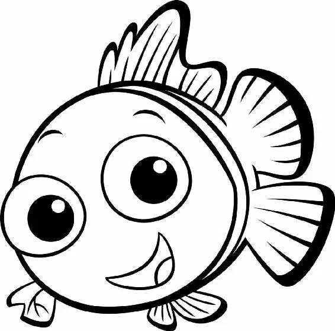

A few minutes later, Mr. Ray and the children arrived at the Drop-off.
“All right, kids,” said Mr. Ray. “Feel free to explore. But stay close.” The class gathered around Mr. Ray as he began his science lesson.
Tad turned to Pearl and Sheldon. “Come on,” he whispered. “Let’s go.”
The three friends sneaked away from the group.
“Hey, guys. Wait up,” said Nemo. He raced after them. But once he realized where he was, he stopped short. He was at the edge of the reef. The ocean spread out before him. It was so big, so wide, and so blue—it was like nothing he’d ever seen.
“Whoa!” he exclaimed.
“Cool!” said Sheldon, Pearl, and Tad at the same time.
Tad pushed Pearl toward the edge. “Aaah!” she cried. Then he yanked her back.
The small octopus looked down. She was covered in black liquid. “Aw, you guys! You made me ink!”
Nemo felt dizzy with excitement. He was playing with friends! Seeing the ocean! It was all so new.
“What’s that?” Nemo pointed a fin at a dive boat floating on the surface.
“I know what it is,” said Tad. “Sandy Plankton saw one. He said it was called a butt.”
“Wow!” exclaimed Pearl. “That’s a pretty big butt.”
“Ooh-ooh, look at me,” Sheldon said, starting to swim out into the open water. “I’m going to go touch the butt! Aaaachoo!” He sneezed, and the force of his sneeze moved him a bit closer to the boat.
“Aaah!” Sheldon screamed. He raced back to his friends.
The others laughed. “Well, let’s see you get closer,” Sheldon dared them.
Pearl jumped out, just a little past where Sheldon had been. Then she hurried back. “Beat that!”
Next Tad swam out even farther than Pearl. “Come on, Nemo!” he said. “How far can you go?”
“Oh… um,” Nemo stammered. “My dad says it’s not safe.”
Suddenly, Marlin swam up next to Nemo. He pulled Nemo away from his new friends. Nervous and angry, Marlin scolded Nemo. “You were about to swim into open water!”
“No,” Nemo said. “I wasn’t going to go out—”
“It’s just a good thing I was here,” Marlin interrupted. “If I hadn’t shown up—”
“But, Dad, no—” Nemo started to say. The other children gathered around them. “Sir, he wasn’t going to go,” said Pearl. “Yeah,” said Tad. “He was too afraid.” “No, I wasn’t!” Nemo said defensively. “This does not concern you, kids,” Marlin said to Nemo’s friends. “And you’re lucky I don’t tell your parents you were out there!” Then he turned to Nemo. “You know you can’t swim well.”
“I can swim fine, Dad, okay?” Nemo cried. “No, it’s not okay. You shouldn’t be anywhere near here,” Marlin said. “I was right. You know what? We’ll start school in a year or two.”
“No, Dad! Just because you’re scared of the ocean—”
“Clearly you’re not ready, and you’re not coming back here till you are,” Marlin said. “You think you can do these things, but you just can’t, Nemo!”
“I hate you,” Nemo whispered under his breath. His dad had embarrassed him in front of everyone. Nemo would show them he wasn’t scared of the ocean like his dad.
“Excuse me.” Mr. Ray swam up to Marlin, shooing the children away. “Is there anything I can do?”
“You know, I’m sorry. I didn’t mean to interrupt things. He isn’t a good swimmer, and I just think it’s a little too soon for him to be out here unsupervised,” Marlin explained.
“Well, I can assure you, he’s quite safe with me—” Mr. Ray started to say.
Marlin shook his head, interrupting the teacher. “Look, I’m sure he is, but you have a large class. He can get lost, you know, from sight if you’re not looking. Now, I’m not saying you’re not looking. You’re looking . . .” As the grown-ups kept talking, one little fish gasped. “Oh my gosh! Nemo’s swimming out to sea!”
“Nemo!” Marlin shouted. “What do you think you’re doing? You’re gonna get stuck out there, and I’m gonna have to get you before another fish does! Get back here! I said get back here, now! Stop! You take one more move, mister—”
Nemo ignored his father. I’m getting closer, he thought. Closer. There! He slapped the side of the dive boat with his fin.
“He touched the butt!” Tad said in amazement.
“You just paddle your little tail right back here, Nemo!” Marlin yelled. “That’s right. You are in big trouble, young man. Do you hear me?Big—”
Marlin froze, unable to speak. But now everyone else was shouting for Nemo to swim back quickly.
Nemo realized everyone was looking behind him. What was going on? He spun around to look. All he could see was his own reflection in a giant diver’s mask....
